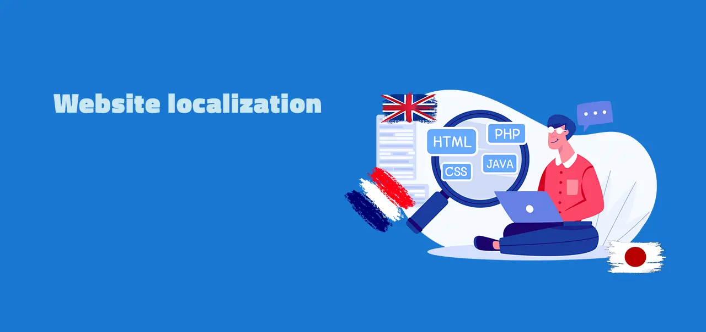

This is the most comprehensive guide about website localization, the process of adapting an existing website to the language and culture of a target market.
This article is specific for websites, if you need more general information, check out our blogpost about software localization.
The question is: How can you get the most efficient way to localize your website for your users? This is where the following guide comes into play.
Table of contents
- What is website localization?
- Why should you be interested in a positive outcome?
- When is it appropriate to localize your website?
- Prepare the localization of your website
- A step-by-step process for web localization
- Examples: Popular and from our clients
- How to measure the quality
- Choose the right platform
- Conclusion
What is website localization?
It is part of internationalization and localization and entails much more than just simple text translation; it must take into account all language and cultural variables. If you are selling a decent product in your home market, it is possible that you are also doing so in other countries. If you wish to sell in Spain, for example, your information must be translated into an adapted message in their original language.
You understand what website localization is? Now, let's find out why it's important:
Why should you be interested in a positive outcome?
A good website localization may help multinational businesses establish significant brand awareness outside of their home country.
People on the internet clearly desire to buy from websites in their own language, as evidenced by several studies. Many firms utilize landingpages for a specific area to provide basic corporate information.
This is not the strategy to take since the target audience may perceive a lack of enthusiasm for their location and requirements. Local customers anticipate a website that is identical to the one in your primary market.
The localization of a website can increase the revenue of your company. It appears to be an administrative concern in most circumstances, but it is an investment in yourself and your organization.
When is it appropriate to localize your website?
You're wondering when to start localizing a site. This varies from firm to company, and a variety of factors can influence when the ideal time is reached.
However, there are a few scenarios to bring you to start thinking about it:
- Your business is launching a new product.
- You must adhere to market standards.
- Your company is expanding internationally.
- Your company establishes a new branch in another country.
- Your business follows the franchising model.
- Your business figures are lower in some areas than in others.
- Your company acts as a global platform.
- Your company's global branding strategy is shifting.
Prepare the localization of your website
Look for a good preparation of your localization strategy, because it will end up in more than just translate some sentence. This process should be part of your overall business strategy, because there are many non-technical-aspects to consider when going into new markets:
A step-by-step checklist for the business questions
➡️ Examine the market - is there a possible audience?
➡️ Determine the local compliance needs
➡️ Determine the best technology for localization
➡️ Determine how we will market in the new place
➡️ Decide who is part of the team (lead project manager, marketing expert, developer, etc.)
➡️ Construct a list of quality assurance criteria
If you come up with a strong plan and take into account all of the above checkpoints. Then it's time to go more into the webpage's details.
A step-by-step process for web localization
- Define the strategy of your website localisation
- Design the content of all pages with internationalization in mind
- Execute i18n on your website
- Arrange your team the right way
- Translate your webpages
- Measure the quality and strategy
- Keep up localization with the right software
Keep the following techniques in mind for a successful implementation:
- Place the language selector correctly
- Change the formatting design - a sentence in some languages can be substantially longer
- The curreny should be according to customer need
- Think about the update of graphic and videos
- Ensure a proper information architecture
- Make it easy to update content
- Think about SEO-Localization - SEO should be done parallel to development (industry standard)
- Allow website integrations
- Verify the translations and results
Elements to consider on website
This list gives you an overview about what you need to keep an eye on when internationalize your website:
- the text
- the date and time formats
- the unit of measurement
- the holiday seasons
- the local currency
- the methods consumer can pay
- the way an address is written
- the local letters, symbols, grammar, etc.
- the plurals
- the phone numbers
- the privacy policy
- the images
- the videos
All information must be given in a genuine manner to other locals so that they feel it is tailored to them. Also, the website's navigation may vary as visitors from different regions engage differently with your website. Gender-specific words can also be another possibility, which we do not discuss in detail here, but take that in mind.
Understanding the language is frequently insufficient, because people will not buy from a webpage in English if it is not their first language. The material must reflect all of their familiar conditions, not just the language.
Best practices
➡️ More about the topic? Check the website-internationalization-best practices
The article highlights effective practices for companies entering foreign markets and requiring website translation. There is a significant distinction between translation and localization. With these ideas, you may save a lot of money and time when your website becomes internationally. Furthermore, the best practices article provides a system for translating content and managing these translations.
Examples
There are well-known examples all across the world of companies that have effectively implemented multilingual websites as part of their overall business strategy. www.tesla.com was one of the most well-known examples we checked out.
They offer a large number of regions from which to choose. They also adjust things like privacy policies and graphics to meet the needs of different locations. They do an excellent job of localizing their website, but it isn't perfect, and there are certain areas where they could improve.
The following improvements are some general areas that, in the author's view, may be improved by not deeply analyzing their situation.
First finding
In the author's opinion, the language selector is difficult to discover and therefore not well situated for a good website-experience. It's great that the website displays it based on IP address in advance.
Second finding
In the author's opinion, although switching languages is possible, the user does not receive sufficient tailored info for his intended location. The available Tesla Store Locations are hidden in a bottom menu and are difficult to find. It may help to direct the user's attention to these Locations, allowing the consumer to feel more home.
Third finding
In the author's opinion, some product description information is tailored to a larger geographic area, such as Europe. It isn't particular to different areas of Europe; they used the same data across many countries. However, this may be wanted from them, because the efforts would be excessive in comparison to the results they would get. "The product speaks for itself".
The author is unable to conduct a thorough analysis of the technical localization aspects as part of this article.
Locize examples
We, at locize localization management platform, have assisted many customers in achieving their goals with website-localization. The following examples can assist you:
1) globalfinreg.com
Globalfinreg has been able to efficiently localize their two websites thanks to locize. They said locize is for them:
An easy-to-use interface for managing translations. It is possible to regulate exactly what each translator sees, and they enjoy doing so. The UI also allows you to easily check which translations are needed and divide your application into separate namespaces.

2) www.redcross.ch
Thanks to the generous support and the features of locize, the headless websites of the Swiss Red Cross can be translated into different languages within a short time!

Quality ensurance
The quality check is essential for the team to get a measurement of where the project is standing in order to provide the correct website-experience. As a result of this, improving any project milestones or refining website content will be beneficial. This should also contain a check to see if the translators did a good job.
In some circumstances, contemporary technology such as machine translation will automate the procedure. As a result, human monitoring can assure not only the quality of the language on the website, but also its functionality and site experience.
We have the following two areas of testing for localization in the web:
Language Testing
Is the language properly tested, and are all words correct and understood? Ensure consistency since success and failure can be determined by trust. This list might be useful for testing local language:
- Wrong use of language
- Spelling mistakes
- Restricted words in a culture
- Non readable sentence
- Language Errors
Localization Testing
Testing the localization ensures that your various language site versions work properly. Distribute your testers by newly targeted markets.
Check the operation of all web forms and checkout functionality. Also if there is any broken design to fix. A short list you can find below:
- Check for non-translated strings
- Long website loading times
- Wrong date and time format discovered
- Check for broken strings
- Check hardware compatibility
- Ensure Hyperlinks operate
- Form and Checkout features must be tested
Choose the right platform
A multilingual website is typically a large undertaking, and using a well-established localization management solution will assist you in completing it more quickly. When choosing a platform, make sure it was created specifically for your needs. You will be able to provide greater user-experience and add appropriate tools as a result of this.
➡️ Watch our introduction video
➡️ Create a new user account for free
➡️ Check out how to add a new project
With locize, a modern and economical localization management platform, you can bridge the gap between translation and development. It makes your site, app, game, or whatever project you're working on more global, dynamic, and engaging, particularly when you use the continuous localization features.
While we hope you enjoy our services, we will not lock you into a contract. We believe in the added value of our services, so you can export your translations and utilize them with i18next. If you are a developer, this could be a possibility for you, or you can look at our step-by-step guide for JavaScript localization
Conclusion
Consumers have a clear requirement for a website that is tailored to customized and localized content. As a result, the localization of a site is the tech-part for any company looking to expand into new areas or market segment. As we have built it up for you, it must comprise a good business strategy, which is the starting point for a solid technological implementation.
Global brands do it
As you can see from our real-world examples, the most well-known organizations in any industry have used website localization. As a result, you should address it as soon as possible in your company's internationalization process. It is significant due to the commitment your organization would make to potential clients in the newly targeted area.
Users will appreciate it
Your target audience will thank you by buying your product or service. In this market, your company's brand awareness will grow as well, which is essential for internet business success.
Use this guide
The "How to locize your website?" is easy to answer, select the right platform for your needs and plan all steps needed for the language localization in advance.
Keep it organized
The localization management platform can assist you in remaining organized and adaptable during your continuous-localization.
Why locize should be your choice
Our team has considerable experience to assist you with your project or development needs, thanks to many customers that we assisted with the localization of their website.
We've also supplied the most valuable pricing of our website localization services because of our many years of expertise with these consumers, and we don't require you to sign long-term contracts.